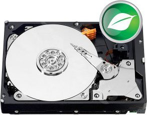

Železo na kterém to běží
HW serveru je postaven na mini ITX desce Mount Washington se 4GB paměti a 1TB diskem, hozené do mini ITX case se 150W zdrojem.
Základní deska:
INTEL D525MW Mount Washington
Case:
CFI A6819 Slim mini ITX černý, 1x 5.25", 1x 3.5" HDD, 2x USB2.0, HD audio, 150W zdroj

Harddisk:
WESTERN DIGITAL Caviar Green 1000GB, SATA II, 64MB cache, IntelliPower, 8.9ms, WD10EARS 
Paměť:
4GB (KIT 2x2GB) SO-DIMM DDR3 1333MHz CL9 PATRIOT Signature Line